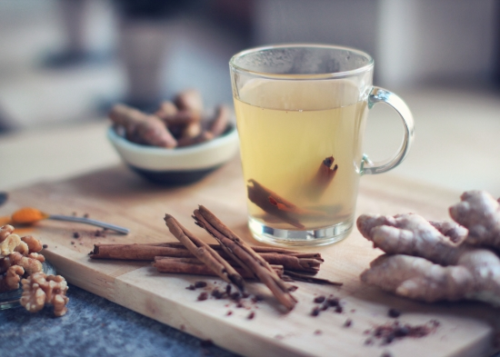

Introduction
In medieval Europe, spices were far too expensive for ordinary workers to afford, except as an occasional treat.
Imported from Asia and Africa, spices were used to signify the elites’ wealth, remedy health complaints, preserve fresh food, as well as add flavour in the same way as today.
Medieval gingerbread does not have many similarities with our modern cake or biscuit.
The recipe is recorded in some manuscripts, as well as by Geoffrey Chaucer, who calls it ‘gyngebreed’.
A mixture of breadcrumbs and honey, the sweet was often flavoured with pepper, ginger, and cinnamon, and decorated with a clove.
These were the four most popular spice imports of the era, so this gingerbread offers a great snapshot of their cuisine.
Other gingerbread recipes also included saffron or sandalwood for colour.

Even today, people use spices for semi-medicinal purposes.
The most popular medieval spice was pepper, still one of European cuisine’s staples today.
Pepper was so popular that it was often shipped in large bulk quantities.
Pepper was followed in popularity by ginger, the star of our medieval gingerbread.
Ginger was used as a treatment for digestive issues, anaemia and liver problems, as well as to prevent the common cold.
Today, ginger has similar uses; lemon and ginger tea is a popular drink for people feeling under the weather.
Cinnamon and cloves shared many properties with ginger.
However, cinnamon was also used as a preservative to keep foods safe for longer,
and cloves could be used as an early anaesthetic.